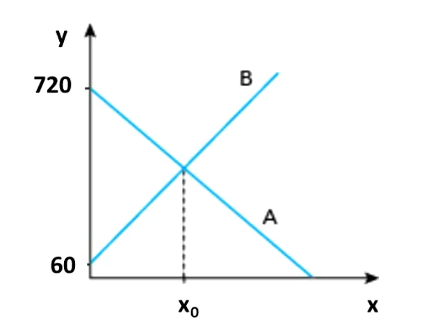

(UERJ - 2014) O reservatório A perde água a uma taxa constante de 10 litros por hora, enquanto o reservatório B ganha água a uma taxa constante de 12 litros por hora. No gráfico, estão representados, no eixo y, os volumes, em litros, da água contida em cada um dos reservatórios, em função do tempo, em horas, representado no eixo x. Determine o tempo x0, em horas, indicado no gráfico.
